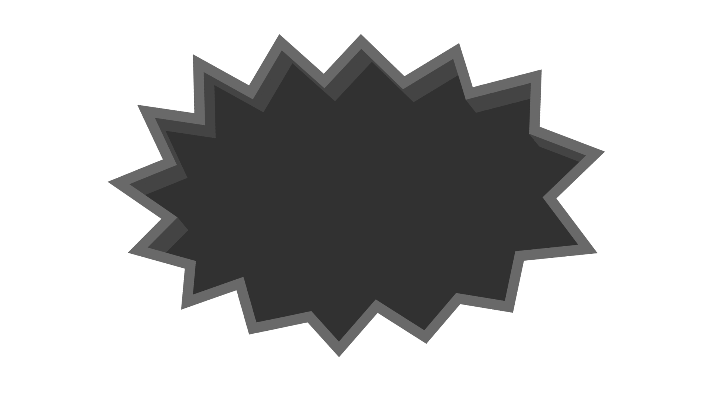
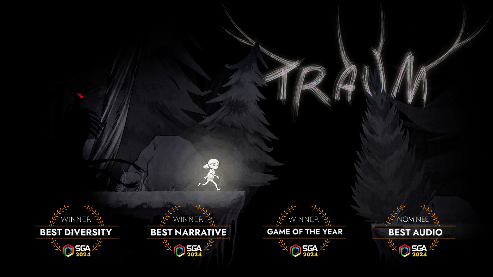
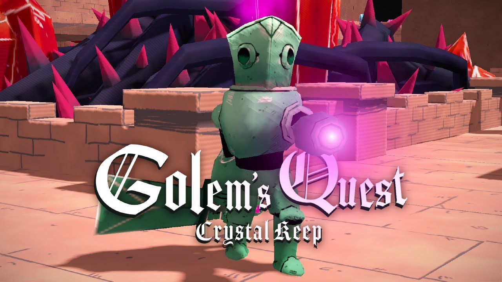
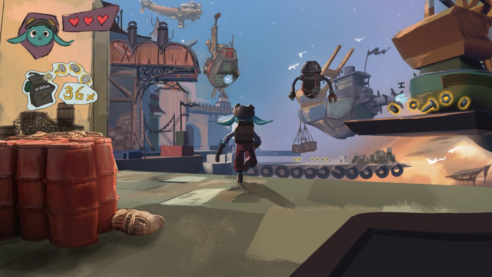
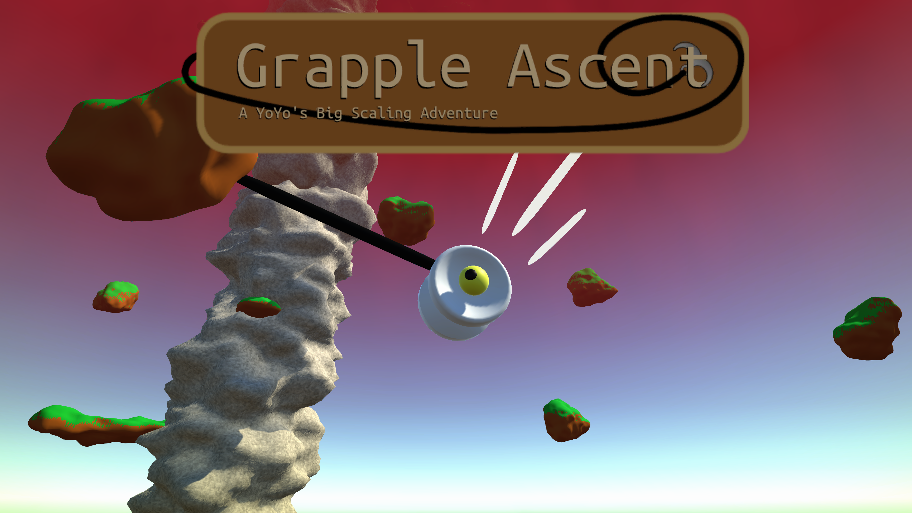

Hi!
I'm Simon Henriksson
I'm Simon Henriksson
Gameplay / physics programmer

About me
I am a game programmer, currently studying at The Game Assembly - Malmö, a game development school. I am a passionate game developer with my sights set on making awesome and innovative games.
I've been making games for more than 6 years, but have been fascinated with games ever since I got introduced to them.
Specialization
Physics-Based Mesh Breaking

Tga has got a specialization course where you choose a subject and read more into it to for example sove a problem you have in your development process.
The subject i have chosen to specialize in is physx and breaking holes in any mesh, both the collider and the visual mesh.
The subject i have chosen to specialize in is physx and breaking holes in any mesh, both the collider and the visual mesh.
Games
TGA projects
TRAUM - Project 3

TRAUM was made during a 12 week period on half-time and the reference game was "Limbo" by Playdead.
Pitch:
Traum takes us on the journey of our protagonist coming face to face with the embodiment of her trauma through surreal and dangerous environments.
TRAUM won 3 of 4 nominated awards at The Swedish Game Awards.
Winner: Game Of The Year, Best Narrative, Best Diversity.
Nominee: Best Audio
Pitch:
Traum takes us on the journey of our protagonist coming face to face with the embodiment of her trauma through surreal and dangerous environments.
TRAUM won 3 of 4 nominated awards at The Swedish Game Awards.
Winner: Game Of The Year, Best Narrative, Best Diversity.
Nominee: Best Audio
Golem's Quest: Crystal Keep - Project 4

Golem's Quest: crystal keep was made duing a XX Week period on half time. The reference game was "Death's Door" by Acid Nerve.
Pitch:
Slay the hostile monsters that has infested the fortress. Find the crystal keys to reactivate the broken portal, and leave this forsaken land to find your long lost creator.
Pitch:
Slay the hostile monsters that has infested the fortress. Find the crystal keys to reactivate the broken portal, and leave this forsaken land to find your long lost creator.
Stella & Orbit: Take flight - Project 7

Stella & Orbit: take flight was made in a XX Week period on half time. The reference game was "Ratchet & Clank: Quest for Booty" made for the PlayStation3, by Insomniac Games.
Pitch:
As an alien with a knack for technology, escape the abusive orphanage using your self-built companion. Traverse through the space harbor and realize your dream of becoming a pirate.
Pitch:
As an alien with a knack for technology, escape the abusive orphanage using your self-built companion. Traverse through the space harbor and realize your dream of becoming a pirate.
ALL GAMES...
Personal projects / Games
Grapple Ascent - GMTK Game Jam 2024

Grapple ascent was a game jam project me and 4 others created for the "Game Makers Tool Kit Gamejam 2024". The Gamejam lasted 96 hours and the given theme for the jam was "Built to Scale"